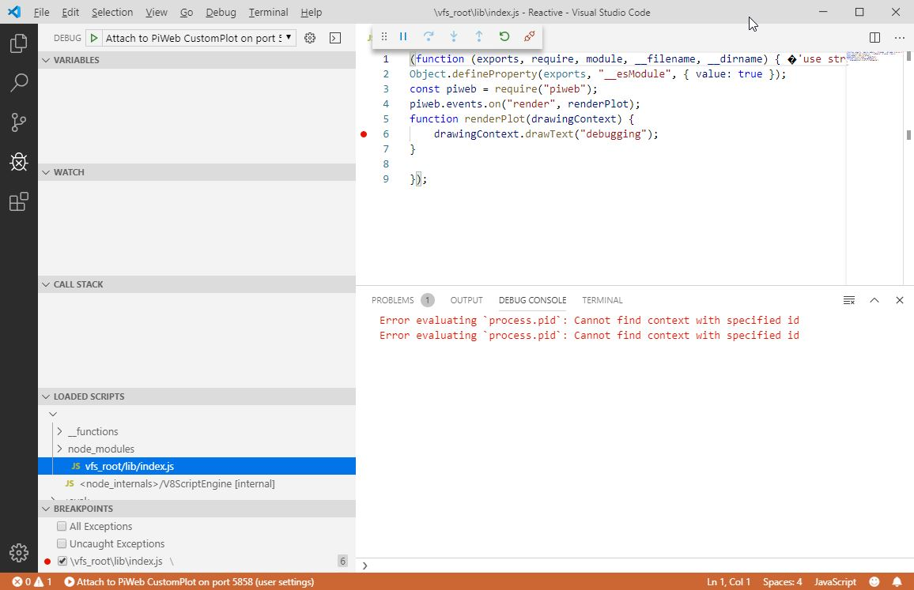
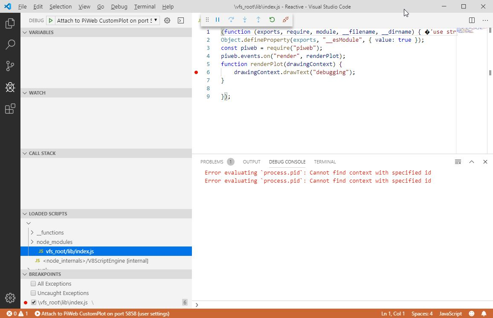

PiWeb Designer can be started with additional command line arguments to enable or disable certain features related with plot extensions. You can view the effective values of all parameters in the PiWeb log file after startup.
-ext-execution [enabled/disabled]
Determines whether or not to load extensions. By setting this parameter to disabled, extensions will not be loaded and displayed.
default:enabled example:-ext-execution disabled
-ext-fs-watch [enabled/disabled]
Extensions are loaded at startup time. By activating this flag, PiWeb Designer is going to monitor all extension source directories for changes. When any file changes, the appropriate extensions will be reloaded automatically. Report elements however are not automatically updated, since there is a separate flag named -ext-auto-plot-update for that. This parameter might help to avoid problems with remote file systems.
default:enabled example: `-ext-fs-watch disabled
-ext-auto-plot-update [enabled/disabled]
While this flag is active, all changes on the source code of an extension will update its elements that are currently displayed in the report. This will only work, when the source path of the extension is the same as the one it has been created in. This means, that a report that is transferred from another machine, will probably not update itself.
This option is by default disabled, to avoid unwanted updates of elements that are not in developement anymore.
By using this flag, you can add additional extension source directories to the three existing, hard wired source directories. The flag -ext-fs-watch will also monitor the additional directories. Relative paths specified here must be relative to the working directory of PiWeb, which is usually the installation directory. We recommend to specify absolute paths. This parameter was designed to develop extensions, that are located in a directory that is under source control.
This flag activates the extension developing mode. It enables verbose logging of events that occur when a package is loaded, helpful error messages in the area of the extension element and in the log, as well as enabling the debug log messages, generated by your extension.
This option also generates a new entry in the extensions context menu, which contains some useful features.
It's possible to debug your plot with an appropriate client, such as Visual Studio Code or Google Chrome.
default:5858 example:-ext-debug-port 9000
Debugging
When PiWeb Designer is started with the parameter -ext-development-mode, it's possible to debug your extensions via the inspect protocol. The following sections show how to debug extensions with Visual Studio Code, but any application that supports the inspect protocol should work.
1. Setting up Visual Studio Code
Set the launch parameters in VSCodes settings like the following. Please note, that the Debug port can be changed with the startup parameter -ext-debug-port. In any case, the configuration must match your configured port.
"launch": {
"version": "0.2.0",
"configurations": [
{
"name": "Attach to PiWeb CustomPlot on port 5858",
"type": "node",
"request": "attach",
"protocol": "inspector",
"address": "localhost",
"port": 5858
}
]
}
2. Setting up PiWeb Designer
In order to launch the debugger, PiWeb Designer must be up and running. Also, it's necessary to create a report that contains at least one plot extension.
3. Connecting PiWeb Designer
In Visual Studio Code, start the Debugging by pressing F5or go to Debug->Start Debugging. After that, the Debugging Tab should show up.
4. Debug
In the Debugging tab, you'll find the section 'Loaded scripts`, where you need to expand the first node. Under that node, you'll find the compiled sources of your extension, which you can open to add breakpoints. After you have added breakpoints, you need to trigger the code. You can do this by updating data in PiWeb Designer, or by moving the element to trigger a redraw.

Precompilation
Whenever your extension is loaded, PiWeb must compile the typescript sourcecode to javascript source code. With more and more extensions, this step consumes quite a lot of time. Even with only a single extension, the typescript compiler causes a significant lag every time the designer and monitor starts.
To avoid this lag, you can skip the typescript compilation by adding precompiled sources to your extension.
1. Adjust package.json
Remove the following snippet from your extensions package.json file:
"piweb_actions": {
"load": "compile_typescript"
}
2. Precompile
Open a console in your packages root directory and run the command tsc. In case the command is unknown, you'll have to install typescript first. Your computer might need to restart after the installation, to add tsc to your path variable.
Tips and Tricks
Content
Startup parameters
PiWeb Designer can be started with additional command line arguments to enable or disable certain features related with plot extensions. You can view the effective values of all parameters in the PiWeb log file after startup.
-ext-execution [enabled/disabled]Determines whether or not to load extensions. By setting this parameter to disabled, extensions will not be loaded and displayed.
default:
enabledexample:
-ext-execution disabled-ext-fs-watch [enabled/disabled]Extensions are loaded at startup time. By activating this flag, PiWeb Designer is going to monitor all extension source directories for changes. When any file changes, the appropriate extensions will be reloaded automatically. Report elements however are not automatically updated, since there is a separate flag named
-ext-auto-plot-updatefor that. This parameter might help to avoid problems with remote file systems.default:
enabledexample: `-ext-fs-watch disabled
-ext-auto-plot-update [enabled/disabled]While this flag is active, all changes on the source code of an extension will update its elements that are currently displayed in the report. This will only work, when the source path of the extension is the same as the one it has been created in. This means, that a report that is transferred from another machine, will probably not update itself. This option is by default disabled, to avoid unwanted updates of elements that are not in developement anymore.
default:
disabledexample:
-ext-auto-plot-update enabled-ext-sources [path1] [path2] ...By using this flag, you can add additional extension source directories to the three existing, hard wired source directories. The flag
-ext-fs-watchwill also monitor the additional directories. Relative paths specified here must be relative to the working directory of PiWeb, which is usually the installation directory. We recommend to specify absolute paths. This parameter was designed to develop extensions, that are located in a directory that is under source control.example:
-ext-sources "c:\git\piweb\extensions" "d:\extensions"-ext-development-mode [enabled/disabled]This flag activates the extension developing mode. It enables verbose logging of events that occur when a package is loaded, helpful error messages in the area of the extension element and in the log, as well as enabling the debug log messages, generated by your extension. This option also generates a new entry in the extensions context menu, which contains some useful features.
default:
disabledexample:
-ext-development-mode enabled-ext-debug-port <Port>It's possible to debug your plot with an appropriate client, such as Visual Studio Code or Google Chrome.
default:
5858example:
-ext-debug-port 9000Debugging
When PiWeb Designer is started with the parameter
-ext-development-mode, it's possible to debug your extensions via theinspectprotocol. The following sections show how to debug extensions with Visual Studio Code, but any application that supports theinspectprotocol should work.1. Setting up Visual Studio Code
Set the launch parameters in VSCodes settings like the following. Please note, that the Debug port can be changed with the startup parameter
-ext-debug-port. In any case, the configuration must match your configured port.2. Setting up PiWeb Designer
In order to launch the debugger, PiWeb Designer must be up and running. Also, it's necessary to create a report that contains at least one plot extension.
3. Connecting PiWeb Designer
In Visual Studio Code, start the Debugging by pressing
F5or go toDebug->Start Debugging. After that, the Debugging Tab should show up.4. Debug
In the Debugging tab, you'll find the section 'Loaded scripts`, where you need to expand the first node. Under that node, you'll find the compiled sources of your extension, which you can open to add breakpoints. After you have added breakpoints, you need to trigger the code. You can do this by updating data in PiWeb Designer, or by moving the element to trigger a redraw.

Precompilation
Whenever your extension is loaded, PiWeb must compile the typescript sourcecode to javascript source code. With more and more extensions, this step consumes quite a lot of time. Even with only a single extension, the typescript compiler causes a significant lag every time the designer and monitor starts. To avoid this lag, you can skip the typescript compilation by adding precompiled sources to your extension.
1. Adjust
package.jsonRemove the following snippet from your extensions
package.jsonfile:2. Precompile
Open a console in your packages root directory and run the command
tsc. In case the command is unknown, you'll have to install typescript first. Your computer might need to restart after the installation, to add tsc to your path variable.